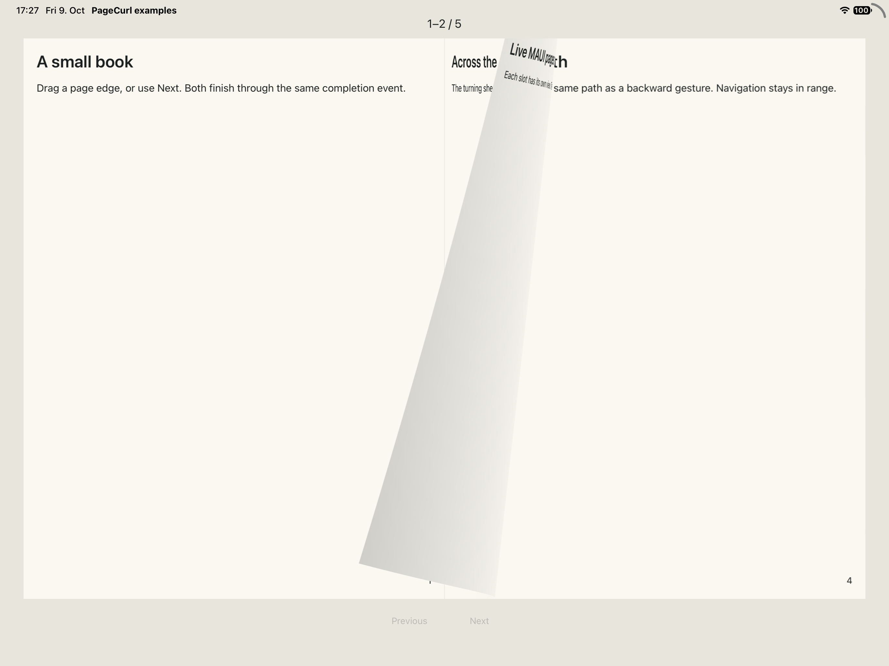

Two-page spreads
PageSpreadView presents a left and right page. It captures the neighboring
pages before enabling navigation.
<curl:PageSpreadView
x:Name="Book"
PageAspectRatio="0.75"
LeftContent="{Binding LeftPage}"
RightContent="{Binding RightPage}"
PreviousLeftContent="{Binding PreviousLeftPage}"
PreviousRightContent="{Binding PreviousRightPage}"
NextLeftContent="{Binding NextLeftPage}"
NextRightContent="{Binding NextRightPage}" />
Give each occupied slot its own MAUI view instance. Multiple views can display the same page data.
Sheet mapping
| Direction | Turning front | Revealed underneath | Turning back |
|---|---|---|---|
| Forward | Right | NextRight | NextLeft |
| Backward | Left | PreviousLeft | PreviousRight |
The back is the adjacent page the sheet lands on. If you omit it or its current capture is unavailable, the control uses the selected mirrored or solid-color fallback. Required front and destination captures still determine readiness.
Commands and boundaries
Use TryTurnForward() and TryTurnBackward(). Enable buttons from
CanTurnForward and CanTurnBackward; these include snapshot readiness.
Use PageSpreadNavigationState to decide whether a neighboring spread exists.
Update the six content slots from a committed PageTurnCompleted event.
Set previous or next slots to null when no neighboring spread exists. For an
odd page count, the final spread has only a left page. Prepare that forward turn
with the final page in NextLeftContent and a blank view in NextRightContent;
the turn needs an underneath destination even when that destination is blank.
After committed completion, assign the final page to LeftContent and set
RightContent to null.
Replacing content schedules capture of dirty slots. Call
RefreshSnapshotAsync() for in-place edits. Explicit requests during a turn
wait until it ends and preserve cancellation. See runtime rules
for the UI-thread and lifecycle contract.
Small reader example
This complete five-page recipe keeps navigation in one place and uses no page
images or demo infrastructure. Follow the quick start to
reference the library and register SkiaSharp. Add these two files to your MAUI
application, using your application's namespace in both x:Class and code.
To open it, return new Window(new ReaderPage()) from your app's CreateWindow.
The recipe running on an iPad simulator during a forward turn: page 1 stays on the left, page 2 curls, page 3 is on its backside and page 4 is underneath.

ReaderPage.xaml:
<ContentPage
xmlns="http://schemas.microsoft.com/dotnet/2021/maui"
xmlns:x="http://schemas.microsoft.com/winfx/2009/xaml"
xmlns:curl="clr-namespace:PageCurl.Maui;assembly=PageCurl.Maui"
x:Class="ReaderApp.ReaderPage" Title="Small reader" BackgroundColor="#E8E5DC">
<Grid Padding="16" RowDefinitions="Auto,*,Auto,Auto" RowSpacing="12">
<Label x:Name="PageCounter" FontSize="18" TextColor="#1C211F" HorizontalTextAlignment="Center" />
<curl:PageSpreadView x:Name="Book" Grid.Row="1" PageAspectRatio="0.75" />
<HorizontalStackLayout Grid.Row="2" Spacing="12" HorizontalOptions="Center">
<Button x:Name="PreviousButton" Text="Previous" IsEnabled="False" MinimumHeightRequest="44" MinimumWidthRequest="96" />
<Button x:Name="NextButton" Text="Next" IsEnabled="False" MinimumHeightRequest="44" MinimumWidthRequest="96" />
</HorizontalStackLayout>
<VerticalStackLayout x:Name="CaptureError" Grid.Row="3" IsVisible="False" Spacing="6">
<Label Text="Page capture failed." TextColor="#1C211F" HorizontalTextAlignment="Center" />
<Button x:Name="RetryButton" Text="Retry capture" />
</VerticalStackLayout>
</Grid>
</ContentPage>
ReaderPage.xaml.cs:
using System.ComponentModel;
using Microsoft.Maui.Controls;
using Microsoft.Maui.Graphics;
using PageCurl.Core;
namespace ReaderApp;
public partial class ReaderPage : ContentPage
{
private static readonly (string Title, string Body)[] Pages =
[
("A small book", "Drag a page edge, or use Next. Both finish through the same completion event."),
("Across the spine", "The turning sheet lands on the opposite side. Its back is the adjacent page."),
("Live MAUI pages", "Each slot has its own view. The control captures neighboring pages before turning."),
("Back and forth", "Previous follows the same path as a backward gesture. Navigation stays in range."),
("The last page", "An odd page count ends with one left page. You can still turn backward."),
];
private readonly PageSpreadNavigationState _navigation = new(Pages.Length);
private Window? _observedWindow;
private CancellationTokenSource? _lifetime;
private bool _active;
private bool _scrollRefreshRunning;
private bool _scrollDirty;
public ReaderPage()
{
InitializeComponent();
Book.PageTurnCompleted += (_, e) =>
{
if (_active && e.Committed && _navigation.TryCommit(e.Direction)) ShowSpread();
};
Book.PropertyChanged += OnBookChanged;
Book.SnapshotFailed += (_, _) =>
{
if (_active) CaptureError.IsVisible = true;
};
PreviousButton.Clicked += (_, _) =>
{
if (_active && _navigation.CanTurnBackward) Book.TryTurnBackward();
};
NextButton.Clicked += (_, _) =>
{
if (_active && _navigation.CanTurnForward) Book.TryTurnForward();
};
RetryButton.Clicked += OnRetryClicked;
ShowSpread();
}
private void ShowSpread()
{
var left = _navigation.LeftPageIndex;
Book.LeftContent = CreatePage(left);
Book.RightContent = _navigation.RightPageIndex is { } right ? CreatePage(right) : null;
Book.PreviousLeftContent = _navigation.CanTurnBackward ? CreatePage(left - 2) : null;
Book.PreviousRightContent = _navigation.CanTurnBackward ? CreatePage(left - 1) : null;
Book.NextLeftContent = _navigation.CanTurnForward ? CreatePage(left + 2) : null;
// A blank view is needed under the incoming odd final page.
Book.NextRightContent = _navigation.CanTurnForward ? CreatePage(left + 3) : null;
PageCounter.Text = _navigation.RightPageIndex is { } last
? $"{left + 1}–{last + 1} / {_navigation.PageCount}"
: $"{left + 1} / {_navigation.PageCount}";
CaptureError.IsVisible = false;
UpdateButtons();
}
private Grid CreatePage(int index)
{
var page = new Grid
{
BackgroundColor = Color.FromArgb("#FAF8F1"),
Padding = new Thickness(20),
RowDefinitions =
{
new RowDefinition(GridLength.Star),
new RowDefinition(GridLength.Auto),
},
RowSpacing = 16,
};
if (index >= Pages.Length) return page;
var text = new VerticalStackLayout { Spacing = 16 };
text.Children.Add(new Label { Text = Pages[index].Title, FontSize = 26,
FontAttributes = FontAttributes.Bold, TextColor = Color.FromArgb("#1C211F") });
text.Children.Add(new Label { Text = Pages[index].Body, FontSize = 16,
TextColor = Color.FromArgb("#1C211F") });
var scroll = new ScrollView { Content = text };
var lastScrollY = 0d;
scroll.Scrolled += (_, e) =>
{
if (e.ScrollY == lastScrollY) return;
lastScrollY = e.ScrollY;
OnTextScrolled(page);
};
page.Add(scroll, 0, 0);
page.Add(new Label { Text = $"{index + 1}", HorizontalTextAlignment = TextAlignment.End,
TextColor = Color.FromArgb("#1C211F") }, 0, 1);
return page;
}
private async void OnTextScrolled(Grid page)
{
if (!_active || (page != Book.LeftContent && page != Book.RightContent)) return;
_scrollDirty = true;
if (_scrollRefreshRunning) return;
var token = _lifetime!.Token;
_scrollRefreshRunning = true;
try
{
while (!token.IsCancellationRequested && _scrollDirty)
{
_scrollDirty = false;
await Book.RefreshSnapshotAsync(token);
}
}
catch (OperationCanceledException) { }
finally
{
if (!token.IsCancellationRequested) _scrollRefreshRunning = false;
}
}
private void OnBookChanged(object? sender, PropertyChangedEventArgs e)
{
if (e.PropertyName is nameof(Book.CanTurnForward) or nameof(Book.CanTurnBackward)) UpdateButtons();
}
private void UpdateButtons()
{
PreviousButton.IsEnabled = _active && _navigation.CanTurnBackward && Book.CanTurnBackward;
NextButton.IsEnabled = _active && _navigation.CanTurnForward && Book.CanTurnForward;
}
protected override void OnAppearing()
{
base.OnAppearing();
ObserveWindow(Window);
SetActive(true);
}
protected override void OnDisappearing()
{
SetActive(false);
ObserveWindow(null);
base.OnDisappearing();
}
private void ObserveWindow(Window? window)
{
if (_observedWindow is not null)
{
_observedWindow.Stopped -= OnWindowStopped;
_observedWindow.Resumed -= OnWindowResumed;
}
_observedWindow = window;
if (window is not null)
{
window.Stopped += OnWindowStopped;
window.Resumed += OnWindowResumed;
}
}
private void OnWindowStopped(object? sender, EventArgs e) => SetActive(false);
private void OnWindowResumed(object? sender, EventArgs e) => SetActive(true);
private void SetActive(bool active)
{
_active = active;
_lifetime?.Cancel();
_lifetime?.Dispose();
_lifetime = active ? new CancellationTokenSource() : null;
_scrollRefreshRunning = false;
_scrollDirty = false;
if (!active) Book.CancelInteraction();
Book.IsVisible = active;
RetryButton.IsEnabled = active;
UpdateButtons();
}
private async void OnRetryClicked(object? sender, EventArgs e)
{
if (!_active || !RetryButton.IsEnabled) return;
var token = _lifetime!.Token;
RetryButton.IsEnabled = false;
CaptureError.IsVisible = false;
try { await Book.RefreshSnapshotAsync(token); }
catch (OperationCanceledException) { }
finally
{
if (_active && !token.IsCancellationRequested)
{
RetryButton.IsEnabled = true;
UpdateButtons();
}
}
}
}
Only committed completion changes the spread index. Capture readiness disables commands while pages are being prepared or a turn is active; rapid repeated clicks cannot skip a spread. Failed capture shows Retry without changing the index. Retry awaits capture and disables its button until finished. Stopping or leaving cancels the active turn and retry wait; leaving detaches window events. An old retry cannot reset the controls of a later activation.
Views are created only when changing spreads, with at most six occupied slots.
The last forward destination contains page 5 and a blank right view; once that
turn commits, the reader shows page 5 on the left and null on the right.
The control owns its snapshots. The example needs no timers or per-frame work.
Page text scrolls vertically when a narrow page or larger system font needs more
space; the page number stays visible. Scroll changes coalesce snapshot refreshes
so the turning sheet shows the latest visible text. Use the outer edge to turn
the sheet.